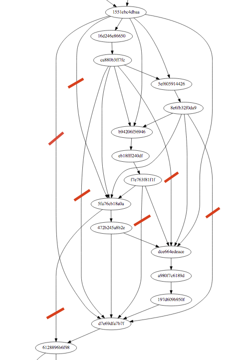

I'm going to just recreate blame, he said. It's going to be easy, he said.
We have a project to migrate the localization of Firefox to one repository for all channels, nick-named cross-channel, or x-channel in short. The plan is to create one repository that holds all the en-US strings we need for Firefox and friends on all channels. One repository to rule them all, if you wish. So you need to get the contents of mozilla-central, comm-central, *-aurora, *-beta, *-release, and also some of *-esr?? together in one repository, with, say, one toolkit/chrome/global/customizeToolbar.dtd file that has all the strings that are used by any of the apps on any branch.
We do have some experience with merging the content of localization files as part of l10n-merge which is run at Firefox build time. So this shouldn't be too hard, right?
Enter version control, and the fact that quite a few of our localizers are actually following the development of Firefox upstream, patch by patch. That they're trying to find the original bug if there's an issue or a question. So, it'd be nice to have the history and blame in the resulting repository reflect what's going on in mozilla-central and its dozen siblings.
Can't we just hg convert and be done with it? Sadly, that only converts one DAG into another hg DAG, and we have a dozen. We have a dozen heads, and we want a single head in the resulting repository.
Thus, I'm working on creating that repository. One side of the task is to update that target repository as we see updates to our 12 original heads. I'm pretty close to that one.
The other task is to create a good starting point. Or, good enough. Maybe if we could just create a repo that had the same blame as we have right now? Like, not the hex or integer revisions, but annotate to the right commit message etc? That's easy, right? Well, I thought it was, and now I'm learning.
To understand the challenges here, one needs to understand the data we're throwing at any algorithm we write, and the mercurial code that creates the actual repository.
As of FIREFOX_AURORA_45_BASE, just the blame for the localized files for Firefox and Firefox for Android includes 2597 hg revisions. And that's not even getting CVS history, but just what's in our usual hg repository. Also, not including comm-central in that number. If that history was linear, things would probably be pretty easy. At least, I blame the problems I see in blame on things not being linear.
So, how non-linear is that history. The first attempt is to look at the revision set with hg log -G -r .... . That creates a graph where the maximum number of parents of a single changeset is at 1465. Yikes. We can't replay that history in the target repository, as hg commits can only have 2 parents. Also, that's clearly not real, we've never had that many parallel threads of development. Looking at the underlying mercurial code, it's showing all reachable roots as parents of a changeset, if you have a sparse graph. That is, it gives you all possible connections through the underlying full graph to the nodes in your selection. But that's not what we're interested in. We're interested in the graph of just our nodes, going just through our nodes.
In a first step, I wrote code that removes all grandchildren from our parents. That reduces the maximum number of parents to 26. Much better, but still bad. At least it's at a size where I can start to use graphviz to create actual visuals to inspect and analyze. Yes, I can graph that graph.
The resulting graph has a few features that are actually already real. mozilla-central has multiple roots. One is the initial hg import of the Firefox code. Another is including Firefox for Android in mozilla-central, which used to be an independent repository. Yet another is the merge of services/sync. And then I have two heads, which isn't much of a problem, it's just that their merge commit didn't create anything to blame for, and thus doesn't show up in my graph. Easy to get to, too.
Looking at a subset of the current graph, it's clear that there are more arcs to remove:

Anytime you have an arc that just leap-frogs to an ancestor, you can safely remove that. I indicated some in the graph above, and you'll find more - I was just tired of annotating in Preview. As said before, I already did that for grandchildren. Writing this post I realize that it's probably easy enough to do it for grandgrandchildren, too. But it's also clear from the full graph, that that algorithm probably won't scale up. Seems I need to find a good spot at which to write an explicit loop detection.
{kind=link}
This endeavour sounds a bit academic at first, why would you care? There are two reasons:
Blame in mercurial depends on the diff that's stored in the backend, and the diff depends on the previous content. So replaying the blame in some way out of band doesn't actually create the same blame. My current algorithm is to just add the final lines one by one to the files, and commit. Whitespace and reoccurring lines get all confused by that algorithm, sadly.
Also, this isn't a one-time effort. The set of files we need to expose in the target depends on the configuration, and often we fix the configuration of Firefox l10n way after the initial landing of the files to localize. So having a sound code-base to catch up on missed history is an important step to make the update algorithm robust. Which is really important to get it run in automation.
PS: The tune for this post is "That Smell" by Lynyrd Skynyrd.